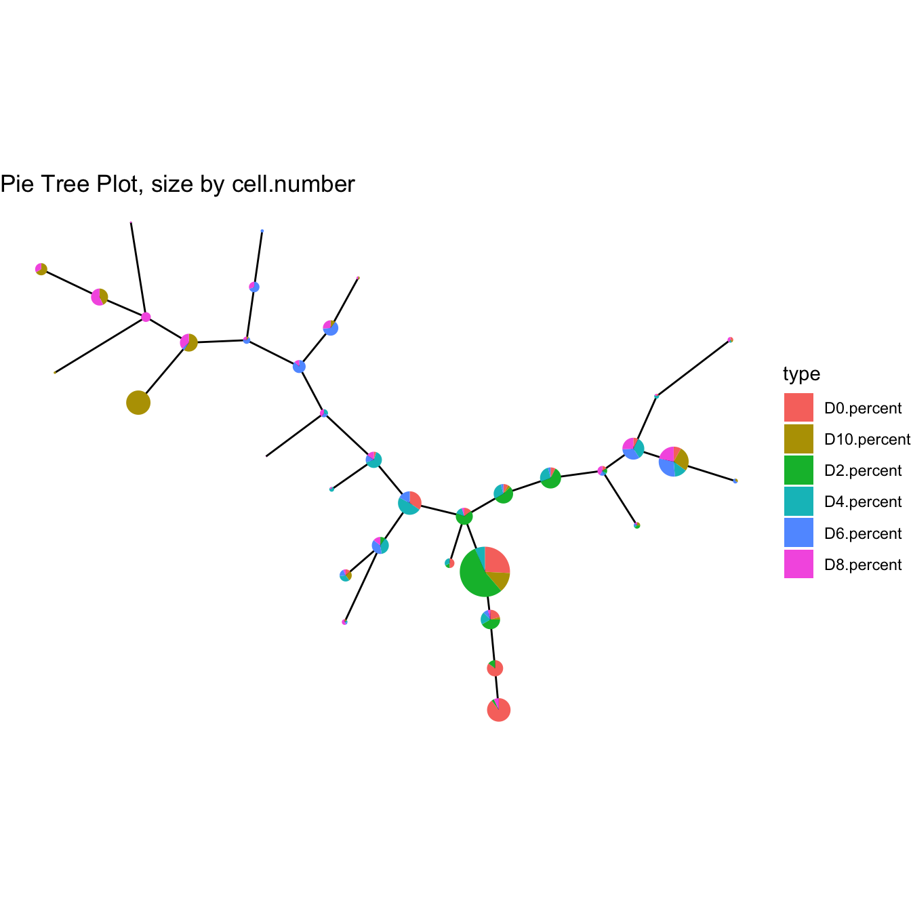
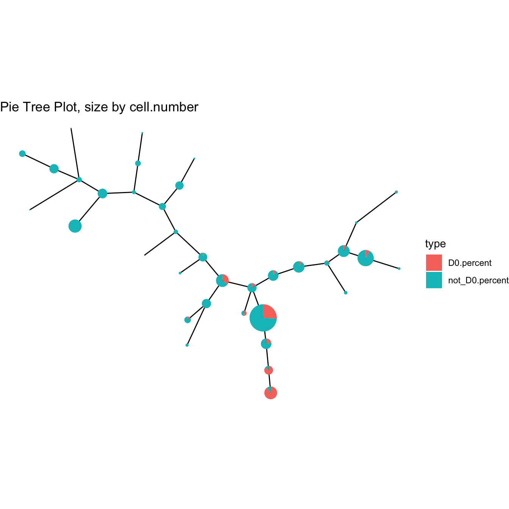
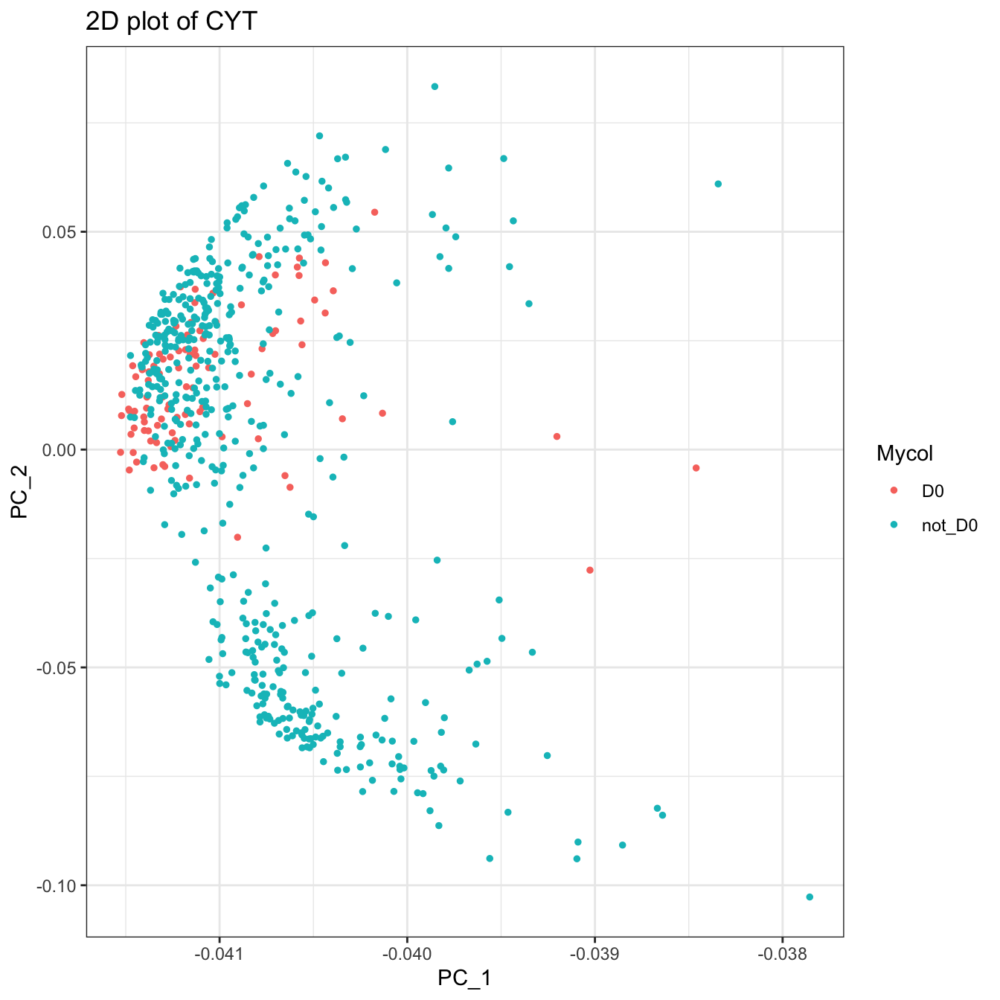

Chapter 6 Advanced Usage
First, we build a CYT object with data in the extend data of CytoTree and build the tree-shaped trajectory.
# Loading packages
suppressMessages({
library(CytoTree)
})
# Read fcs files
fcs.path <- system.file("extdata", package = "CytoTree")
fcs.files <- list.files(fcs.path, pattern = '.FCS$', full = TRUE)
fcs.data <- runExprsMerge(fcs.files, comp = FALSE, transformMethod = "none")
# Refine colnames of fcs data
recol <- c(`FITC-A<CD43>` = "CD43", `APC-A<CD34>` = "CD34",
`BV421-A<CD90>` = "CD90", `BV510-A<CD45RA>` = "CD45RA",
`BV605-A<CD31>` = "CD31", `BV650-A<CD49f>` = "CD49f",
`BV 735-A<CD73>` = "CD73", `BV786-A<CD45>` = "CD45",
`PE-A<FLK1>` = "FLK1", `PE-Cy7-A<CD38>` = "CD38")
colnames(fcs.data)[match(names(recol), colnames(fcs.data))] = recol
fcs.data <- fcs.data[, recol]
# Build the CYT object
cyt <- createCYT(raw.data = fcs.data, normalization.method = "log")
# Run CytoTree as pipeline and visualize as tree
set.seed(1)
cyt <- cyt %>% runCluster() %>% processingCluster() %>% runFastPCA() %>% runTSNE() %>% runDiffusionMap() %>% runUMAP() %>% buildTree()## Mapping data to SOMplotPieTree(cyt)
The first advanced usage is to fetch plot meta information of CytoTree.
# Fetching plot meta information for each cell
plot.meta <- fetchPlotMeta(cyt)
head(plot.meta)
# Fetching plot meta information for each cluster
cluster.meta <- fetchClustMeta(cyt)
head(cluster.meta)
# Or fetching cells
cell.fetch <- fetchCell(cyt, stage = c("D0", "D10"))
head(cell.fetch)The second advanced usage of CytoTree is to add meta-information to meta.data
# Add meta-information in CytoTree meta.data
meta.information <- gsub(".FCS.+", "", rownames(fcs.data))
meta.information[!meta.information %in% "D0"] <- "not_D0"
names(meta.information) <- rownames(fcs.data)
# Change stage
cyt <- addMetaData(cyt, meta.info = meta.information, name = "stage")
plotPieTree(cyt)
# Run PCA and view cell information as our new column
cyt <- runFastPCA(cyt)
cyt <- addMetaData(cyt, meta.info = meta.information, name = "Mycol")
plot2D(cyt, color.by = "Mycol", item.use = c("PC_1", "PC_2"))